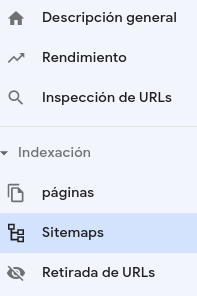

Plugins de Jekyll
La extensibilidad de cualquier producto de software suele ser clave para su éxito. Por suerte, Jekyll permite extender su funcionalidad mediante plugins y temas. El objeto de la presente lección es indagar un poco más en los plugins para comprender cómo configurarlos y, así, poder utilizarlos.
Al finalizar, sabrá:
-
Qué es un plugin.
-
Cómo se indican los plugins utilizados por nuestro sitio web.
-
Cómo permitir el uso de la propiedad remote_theme en el archivo de configuración _config.yaml.
-
Cómo generar automáticamente el archivo de mapa del sitio, sitemap.xml.
-
Cómo generar metadatos SEO para mejorar el posicionamiento del contenido en los buscadores.
-
Qué plugin utilizar para generar el archivo índice de un sitio web a partir del README.md del proyecto.
-
Qué plugin utilizar para realizar redirecciones de URL mediante metaelementos de HTML.
-
Cómo añadir avatares de cuentas de usuario de GitHub a nuestro contenido.
Introducción
Un plugin es un componente que proporciona funcionalidad extra a Jekyll. Se pueden usar tanto para añadir variables o etiquetas a Liquid como para proporcionar funcionalidad con la que generar contenido en el sitio web. Así, por ejemplo, mediante el plugin jekyll-sitemap se genera automáticamente el archivo sitemap.xml del sitio. Un sitio puede utilizar tantos plugins como necesite, siempre que sean compatibles con la versión de Jekyll utilizada.
Para conocer los plugins soportados nativamente por GitHub Pages, puede consultar https://pages.github.com/versions.
Configuración de plugins
Los plugins se indican en la propiedad plugins del archivo _config.yaml. Veamos un ejemplo ilustrativo:
plugins:
- jekyll-remote-theme
- jekyll-sitemap
Plugin jekyll-remote-theme
El plugin jekyll-remote-theme (jekyll-remote-theme plugin) permite utilizar la propiedad remote_theme en el archivo _config.yaml para utilizar temas de manera remota. Hay temas que sólo pueden utilizarse de esta manera. Personalmente, utilizo siempre esta propiedad, en vez de theme.
Plugin jekyll-sitemap
El archivo de mapa de sitio (sitemap file) es un archivo XML que informa a los motores de búsqueda de los recursos del sitio web que deseamos indexe. Lista los URLs que deseamos consideren sus rastreadores. Su objetivo es ayudarles a encontrar más fácilmente los recursos del sitio web sin necesidad de analizarlo completamente. Por ejemplo, si ha decidido indexar su sitio web en Google, puede usar la Google Search Console, https://search.google.com/search-console e indicárselo en Indexación > Sitemaps, lo que hará que el rastreador encole las páginas que en él aparecen:

Este archivo debe tener el nombre sitemap.xml y se debe ubicar en la raíz del sitio web, para que así puedan encontrarlo los rastreadores de los buscadores. En un sitio web Jekyll, podemos generarlo nosotros mismos o bien pedirle a Jekyll que lo genere automáticamente. Para este segundo caso, utilizaremos el plugin jekyll-sitemap (jekyll-sitemap plugin) que ubicaremos en la propiedad plugins del archivo de configuración _config.yaml:
plugins:
- jekyll-sitemap
Cada vez que se genere el sitio web, se generará también el archivo del sitio. Una vez desplegado el sitio en GitHub Pages, puede echarle un vistazo en https://su-dominio/sitemap.xml.
El elemento principal del archivo es <urlset>, el cual actúa como contenedor de los URLs de los recursos indexables del sitio. Este contiene tantos elementos <url> como sea necesario, cada uno de los cuales representa un URL a indexar y, a su vez, puede contener los siguientes elementos:
| Elemento | Descripción |
|---|---|
| <loc> | Contiene el URL a indexar. |
| <changefreq> | Indica la frecuencia con la que se actualiza la página: always, hourly, daily, weekly, monthly, yearly o never. |
| <lastmod> | Fecha y hora de la última modificación como, por ejemplo, 2023-01-19T09:20:17+00:00. |
| <priority> | Valor, entre 0.0 y 1.0, que indica la prioridad de escaneo del recurso con respecto al resto. Solicita que los de mayor prioridad se indexen antes que los de menor prioridad. |
El elemento <lastmod> tomará su valor de la propiedad last_modified_at del encabezamiento de la página o de la propiedad date del post.
He aquí un sencillo ejemplo ilustrativo, extraído del sitio web oficial de Jekyll, que puede encontrar en https://jekyllrb.com/sitemap.xml:
<urlset xmlns:xsi="http://www.w3.org/2001/XMLSchema-instance" xmlns="http://www.sitemaps.org/schemas/sitemap/0.9" xsi:schemaLocation="http://www.sitemaps.org/schemas/sitemap/0.9 http://www.sitemaps.org/schemas/sitemap/0.9/sitemap.xsd">
<url>
<loc>https://jekyllrb.com/docs/assets/</loc>
<lastmod>2023-01-18T23:06:06-08:00</lastmod>
</url>
<url>
<loc>https://jekyllrb.com/docs/code_of_conduct/</loc>
<lastmod>2023-01-18T23:06:06-08:00</lastmod>
</url>
<url>
<loc>https://jekyllrb.com/docs/collections/</loc>
<lastmod>2023-01-18T23:06:06-08:00</lastmod>
</url>
<url>
<loc>https://jekyllrb.com/docs/community/bug/</loc>
<lastmod>2023-01-18T23:06:06-08:00</lastmod>
</url>
<!-- ... -->
<url>
<loc>https://jekyllrb.com/news/releases/</loc>
</url>
<url>
<loc>https://jekyllrb.com/resources/</loc>
</url>
<url>
<loc>https://jekyllrb.com/showcase/</loc>
</url>
<url>
<loc>https://jekyllrb.com/team/</loc>
</url>
</urlset>
Exclusión de un documento del mapa del sitio
Si necesitamos excluir algún recurso del mapa del sitio, no hay más que añadir la propiedad sitemap a false a su encabezamiento (front matter).
Plugin jekyll-seo-tag
El posicionamiento en buscadores (SEO, search engine optimization) consiste en tener en cuenta algunas cosas para mejorar el posicionamiento del sitio y su contenido en los resultados de las búsquedas, ya sea en Google, Bing o Brave Search. Además de disponer de un buen contenido, muy groso modo, consiste en estructurar y usar correctamente los elementos HTML del contenido y añadir algunos metadatos extras. Mediante el plugin jekyll-seo-tag (jekyll-seo-tag plugin), los metadatos se pueden añadir automáticamente a los archivos HTML generados por Jekyll.
Este plugin utiliza algunas propiedades del sitio para añadir esos metadatos extras al HTML generado como, por ejemplo, title, tagline, description, locale y author. Veamos un ejemplo de salida generada por el plugin:
<!-- Begin Jekyll SEO tag v2.8.0 -->
<title>Akromio | Suite de automatización para equipos de IT</title>
<meta name="generator" content="Jekyll v3.9.3" />
<meta property="og:title" content="Akromio" />
<meta property="og:locale" content="es_ES" />
<meta name="description" content="Akromio es una suite de automatización de tareas para desarrolladores de software, administradores y pentesters." />
<meta property="og:description" content="Akromio es una suite de automatización de tareas para desarrolladores de software, administradores y pentesters." />
<link rel="canonical" href="https//akromio.com/" />
<meta property="og:url" content="https//akromio.com/" />
<meta property="og:site_name" content="Akromio" />
<meta property="og:type" content="website" />
<meta name="twitter:card" content="summary" />
<meta property="twitter:title" content="Akromio" />
<meta name="twitter:site" content="@siacodelabs" />
<meta name="twitter:creator" content="@siacodelabs" />
<script type="application/ld+json">
{"@context":"https://schema.org","@type":"WebSite","description":"Akromio es una suite de automatización de tareas para desarrolladores de software, administradores y pentesters.","headline":"akromio","name":"Akromio","url":"https//akromio.com/"}</script>
<!-- End Jekyll SEO tag -->
Propiedad twitter
Si el sitio tiene asociada una cuenta de Twitter, puede indicarla mediante la propiedad twitter del archivo _config.yaml. Ejemplo:
twitter:
card: summary
username: siacodelabs # nombre de la cuenta de twitter
Plugin jekyll-readme-index
De manera predeterminada, el archivo README del proyecto del sitio no lo procesa Jekyll, por lo que no formará parte del sitio web final. Para añadirlo como la página de inicio, podemos utilizar el plugin jekyll-readme-index (jekyll-redirect-from plugin).
Por un lado, lo añadiremos a la propiedad plugins del archivo _config.yaml de nuestro sitio. Por otro lado, podemos configurarlo mediante la propiedad readme_index de este mismo archivo:
plugins:
- jekyll-readme-index
#...
readme_index:
enabled: true
remove_originals: true
with_frontmatter: false
Con la propiedad enabled, indicamos si el plugin se encuentra activado y debe hacer su trabajo. Mediante remove_originals, lo que hacemos es indicar si no debe añadirse el archivo estático README.md al resultado final del sitio web. Si indicamos false, tendremos tanto README.md como index.html; en cambio, si asignamos el valor true, sólo el index.html generado por Jekyll.
Plugin jekyll-redirect-from
Una redirección de URL (URL redirection), también conocida como reenvío de URL (URL forwarding), es un mecanismo para permitir que un determinado recurso tenga asociado más de un URL o para notificar que se ha movido a otra dirección. Esto último es de especial importancia si la página está ya indexada en un buscador y deseamos indicarle que la hemos cambiado de sitio.
Estas redirecciones se pueden hacer básicamente de dos formas, desde el servidor o mediante un metaelemento HTML de la página web que redirige. Si es desde el servidor, se utilizará una respuesta HTTP 3xx; en cambio, cuando se usa un metaelemento de HTML, lo siguiente:
<meta http-equiv="Refresh" content="0; url=url-donde-se-encuentra-el-recurso" />
En Jekyll, sólo es posible la segunda opción, el metaelemento. Y en nuestro caso, tenemos dos opciones, generar una página HTML con el metaelemento de redirección; o bien, solicitarle a Jekyll que lo haga por nosotros. Esta segunda forma es la más sencilla y se hace con el plugin jekyll-redirect-from (jekyll-redirect-from plugin). Con este plugin, podemos hacer dos cosas:
-
Redirigir a otra página dentro del mismo sitio.
-
Redirigir a otra página de otro sitio.
redirect_from
Cuando se usa el plugin jekyll-redirect-from, podemos utilizar dos propiedades personalizadas en los encabezamientos de las páginas dirigentes. Una de estas propiedades es redirect_from con la que indicamos que el archivo de contenido debe generarse con los URLs indicados en ella. Por ejemplo, supongamos la siguiente página con el siguiente encabezamiento:
---
title: Título de la página
permalink: /ruta/original
redirect_from:
- /otra/ruta/dentro/del/sitio
- /esta/es/otra/mas/
---
Contenido Markdown.
En este caso, se generarán tres archivos HTML:
-
El del archivo de contenido en la ruta indicada en la propiedad permalink, o sea, en /ruta/original. Esta contendrá el contenido indicado en la página.
-
Uno dirigente en la primera redirección, es decir, en /otra/ruta/dentro/del/sitio. Sólo contendrá el metaelemento redirigiendo a /ruta/original.
-
Otro dirigente en la segunda redirección, esto es, en /esta/es/otra/mas/index.html. Cuando la redirección termina en una barra (
/), se añade el sufijo index.html a lo indicado. Esta también contiene solo el metaelemento redirigiendo a /ruta/original.
Las páginas dirigentes o de redirección contendrán los siguientes elementos:
<link rel="canonical" href="http://valor-de-site-url-y-baseurl/ruta/original">
<script>location="http://valor-de-site-url-y-baseurl/ruta/original"</script>
<meta http-equiv="refresh" content="0; url=http://valor-de-site-url-y-baseurl/ruta/original">
<meta name="robots" content="noindex">
redirect_to
La otra propiedad que podemos utilizar es redirect_to que sirve para indicar que se redirija a otro URL tanto dentro como fuera del sitio. No necesitan contenido, son simplemente archivos con un encabezamiento como, por ejemplo:
---
title: Título del recurso
permalink: /ruta/en/nuestro/sitio
redirect_to: /otra/ruta
# redirect_to: https://dominio/ruta/en/este/dominio
---
Plugin jekyll-avatar
Mediante el plugin jekyll-avatar (jekyll-avatar plugin) se puede acceder al avatar de una cuenta de GitHub. Genera una etiqueta en Liquid con la que poder acceder al avatar de un determinado usuario como sigue:
{% avatar propiedades %}
| Propiedad | Tipo de datos | Descripción |
|---|---|---|
| user | Texto | Nombre de la cuenta de usuario. |
| size | Número | Tamaño de la imagen. |
Ejemplo:
{%- for username in avatars -%}
{% avatar user={{username}} size=50 %}
{%- endfor -%}